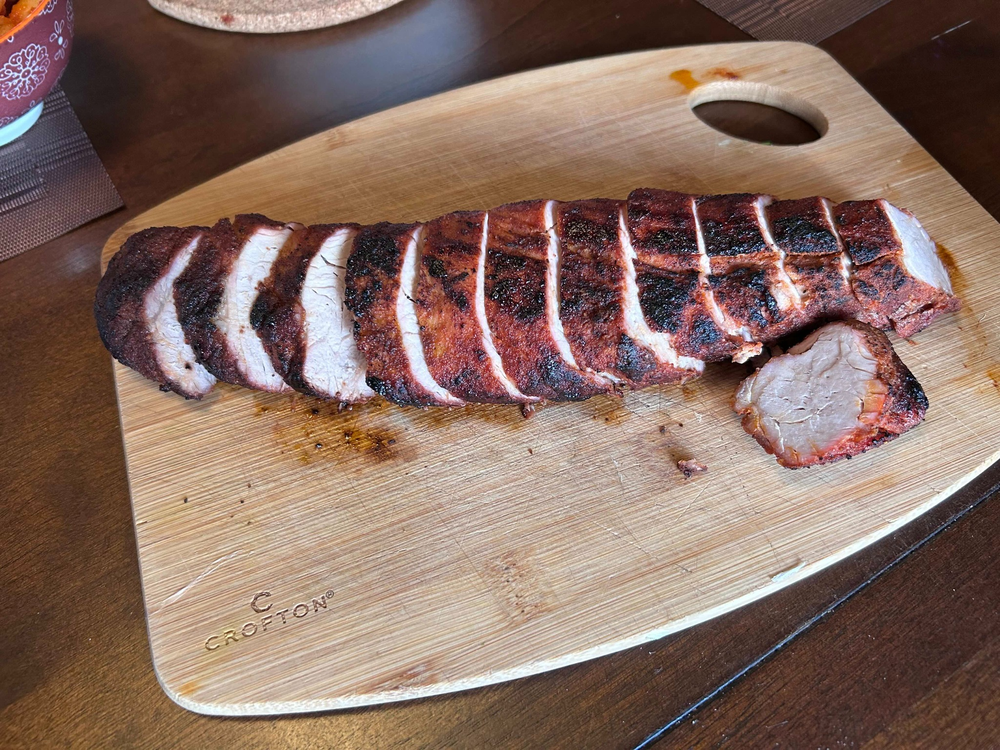

Main
Reverse-Seared Pork Loin
Pork loin cooked gently first, then finished with fierce heat for a juicy centre and a dark sweet-smoked-paprika crust.

Ingredients
- 1 pork loin
- Sweet smoked paprika, generously
- Salt, to taste
- Freshly ground black pepper, to taste
Method
- Coat the pork loin thoroughly with sweet smoked paprika, salt, and black pepper.
- Bake at 185–200°F until the centre reaches about 110°F.
- Raise the oven to 450°F and continue cooking until the internal temperature reaches 145°F.
- For the final crust, torch the outside briefly for a beautiful dark char.
- Rest before slicing, then cut across the grain.
Notes
The reverse-sear gives the loin time to cook gently and evenly before the hot finish. The torch is optional, but particularly good here: the sweet smoked paprika takes on a deep, almost lacquered char.
Method inspired by this reverse-sear technique.